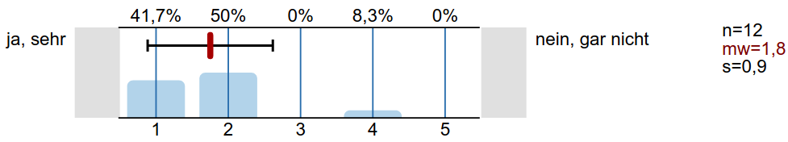
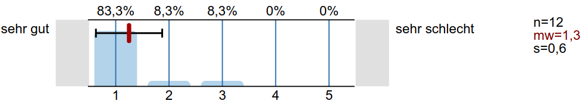

Machine learning in Computational fluid dynamics
Andre Weiner, Rolf Radespiel
TU Braunschweig, Institute of Fluid
Mechanics
Outline
- Concept
- Challenges
- Evaluation
- Outlook
Concept
ML applied to CFD - new lecture/exercise with state-of-the-art topics and tools.
Lecture landing page on Github (link).
Jupyter notebooks - interactive lecture scripts.
Reveal.js slides
- platform/device independent
- available online
- interactive (e.g. note-taking)
100% open-source!
- no license costs - no strings attached
- industry standard tools and libraries
- Creative Commons and GPL content
$\rightarrow$ flexible and sustainable
Challenges
Mostly minor...
- BigBlueButton vs. iPad vs. Eduroam
- time consuming revision/creation process
- (some) students miss essentials
- no legal basis for guest access
Evaluation
Just a few selected numbers...
Traffic created by lecture repository (two weeks).
Lecture content up-to-date?
E-learning support?
Outlook
- repeat/extend lecture in WS 2023/2024
- transfer concept to next lecture
- solutions documented and accessible